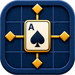
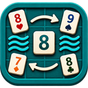
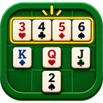
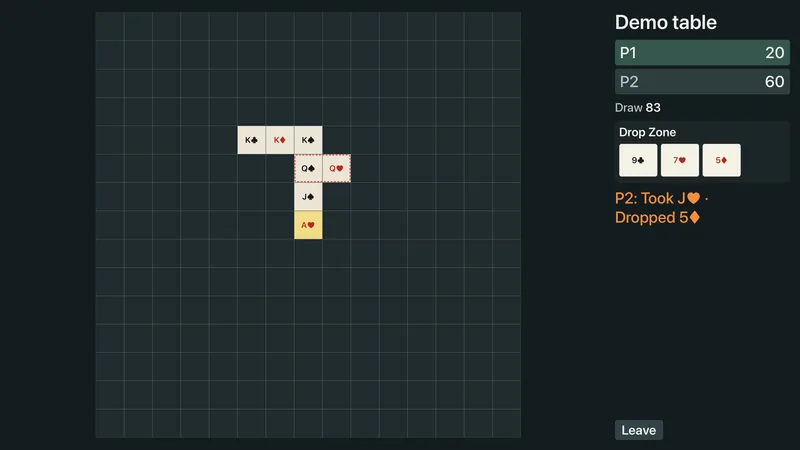
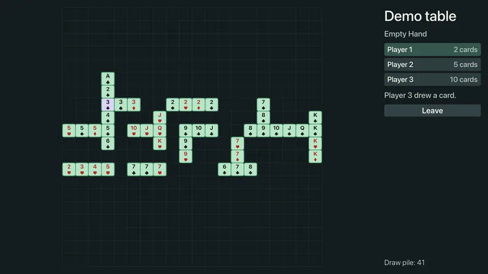
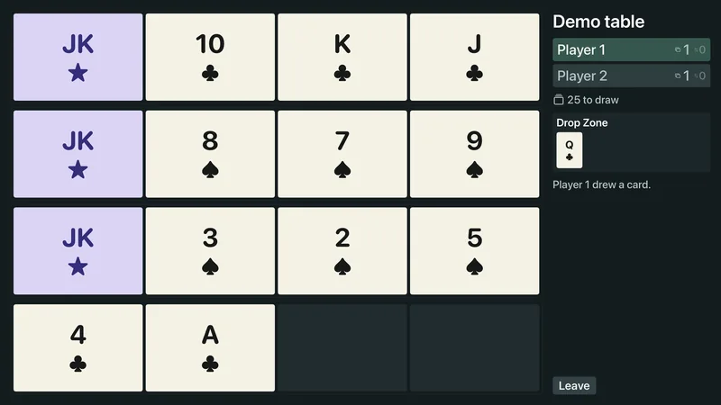

Card games on a grid.
Spatial rummy: runs and sets laid out on a grid instead of in a row, so where a card goes matters as much as which card it is. Three of them.
In TestFlight now for iPhone and iPad, free while it is in beta. $1.99 when it ships, bought once, no subscription. The Apple TV viewer is free.
The games
Three games, one grid.
What changes between them is what you are allowed to do to the board once cards are on it.
The names are literal.
- Anchor holds.
- Tide goes out and comes back.
- Line is a fixed length of rope.

Anchor
Runs and sets on a 15 by 15 board, built outward from one ace in the centre. Nothing moves once it is down. Aces are not low cards here. They are anchors, and an ace is the only way to start a new island somewhere else.

Tide
On your turn you can pull the whole table apart and rebuild it, as long as it is all valid when you are done. Melds sit as islands. They can cross each other and share a card. Three formats, from a single round to a long match.

Line
One shared 4 by 4 grid where only rows count. Every row has to end up a run or a set of four, nobody can take one apart once it is down, and the winner is whoever finishes holding the least.
See it
A turn in each game.
Watching
Put the board on a TV.
You can send the game to another device on the same network, so everyone can see the board on an iPad or a television instead of crowding one phone. The Apple TV app is free and only watches. It cannot play, and nothing leaves your network.



Scroll sideways for the other two.